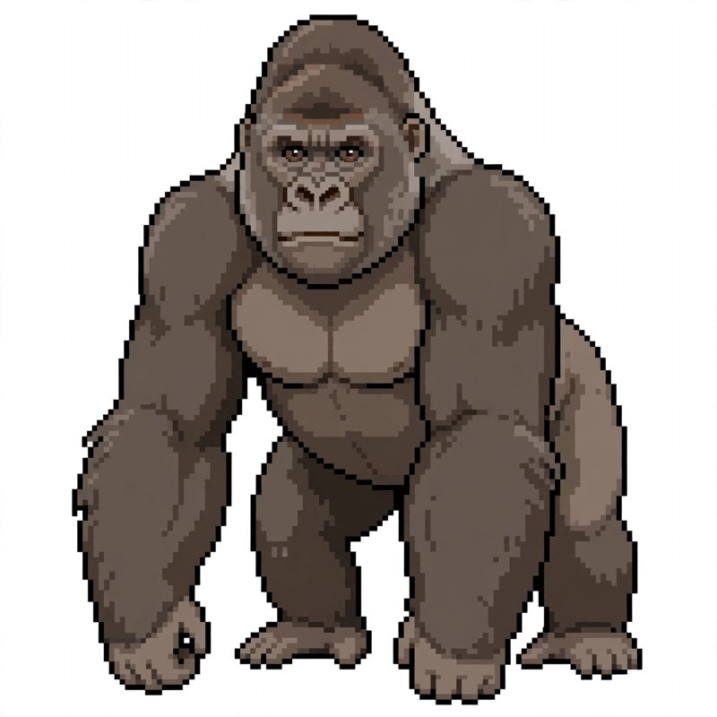

Museを入れてみました ―おはなしアプリには使えなかったけれど
開発の相棒に、AIアシスタント「Muse」を入れてみました。やりたかったことはできませんでしたが、ほかのところで助かっています。
ポスターで紹介したおはなしアプリは、AIに手伝ってもらいながら作っています。その相棒として、AIアシスタント「Muse（ミューズ）」を入れてみました。
Museは、Metaという会社が作っている、暮らしを助けるAIアシスタントです。「スペース」という機能で、言葉で頼むだけで、買い物リストや旅行の計画表のような、自分専用の小さな画面を作れます。公式の説明に出てくるのは、こうした日々の整理の使い方で、アプリ開発の相棒として使う例は書かれていません。つまり今回は、家庭用の道具を仕事場に持ち込んだような使い方です。
さて、このMuse、見た目はドット絵のゴリラです。「キャラクターって変えられるんですか？」と聞いたら「いろいろできますよ」と言われ、試しに「ゴリラにして」と頼んだら、本当にゴリラになりました。意外と似合っているので、そのままにしています。

試したかったこと
おはなしアプリは、キャラクターとお話ししたり、今日の予定を教えてもらったりする、子ども向けのアプリです。Museには画面を作れる機能があるので、この「話し相手」の部分をMuseに任せれば、もっと簡単に作れるのでは、と考えて試しました。
※ おはなしアプリのくわしい内容は、2026年のポスター発表のページで紹介しています。
結果：返事が遅すぎました
声で話しかけてから返事が来るまで、30秒ほどかかりました。工夫しても15〜20秒くらいで、子どもが「おーい、聞いてる？」と言いたくなる長さです。速くする方法はありますが、それでは今の作り方とほとんど変わらず、乗り換える意味がありません。この案は、いったんお休みにしました。
でも、助かったことがありました
ここからは、Museの本来の使い道ではなく、私が自分で見つけた使い方の話です。
一番は、自分のパソコンをつけっぱなしにしなくてよくなったことです。
以前は、遠くから「Claude Code」（プログラムを作ってくれるAI）に指示を出すために、タブレットパソコンをほぼ24時間つけていました。2か月ほどでバッテリーが膨らみ、見た目がうっすらオムライスのようになりました。
私が使った範囲では、Museはクラウド上に自分用のパソコンのような環境を持っていて、そこでClaude Codeを動かせました。そのため、手元のパソコンは閉じたままです。外出先からスマートフォンで指示を出せて、作業の様子は「箱庭オフィス」の画面で見られます。おはなしアプリの直しも、この方法で本番まで反映できました。

ほかにも2つあります。
- 調べものの図書館: 気になるテーマを調べてもらい、要約を本棚にためていく画面です。ためた資料から、解説の音声や動画も作れます。声は音声合成ソフト「VOICEVOX（ボイスボックス）」の四国めたんとずんだもんが、掛け合いで話してくれるので、難しい論文も「聞けば分かる」形になりました。
- ニュース放送: 朝・昼・夜に、天気や各プロジェクトの進み具合を音声で教えてくれます。番組名は「ウホウホゴリラニュース」。ゴリラは、いつのまにかキャスターになっていました。


おわりに
おはなしアプリの話し相手としては、仕組みが変わるのを待つことにしました。それまでは、開発の相棒として働いてもらいます。
発達ブース 田中
みなさんのコメント
コメントを書く ↓
読み込み中です…
コメントを書く
感想・質問・「こんな機能がほしい」など、気軽にどうぞ。